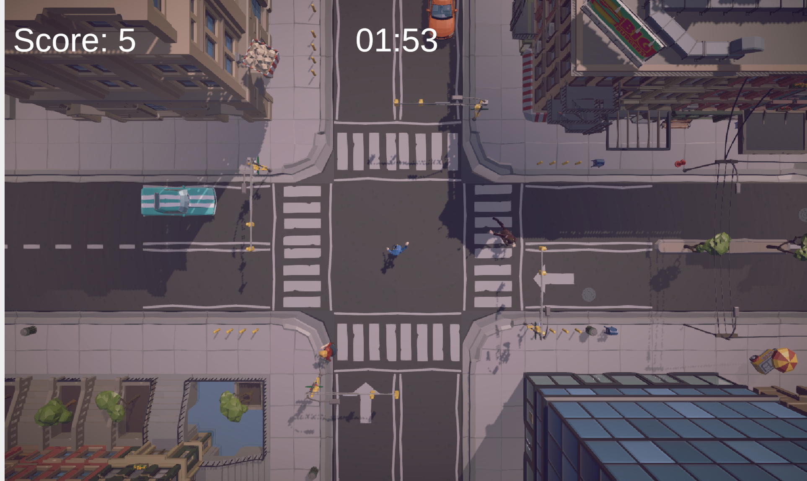

A Real-World System as a Game
Eyes on the Road started as a simple, almost silly idea — what if you could draw the paths that pedestrians walk across a busy intersection? But as development progressed, it became a genuine simulation of how traffic management actually functions: decisions have consequences, timing matters, and poor choices cost lives.
The core challenge was designing a system where freeform player expression meets the rigid constraints of a real intersection — rewarding creative thinking while punishing carelessness.

What I Owned
I worked as level and systems designer, while also owning the development of the environment and all pedestrian interaction and behavior systems. I was responsible for the feel and logic of the core gameplay loop from drawing to crossing to consequence.
Core Mechanics
Path Drawing
Players draw freeform paths directly on screen to direct pedestrians across the intersection in real time.
Pedestrian AI
Pedestrians follow drawn paths, react to collisions with knockback, and respond dynamically to obstacles.
Sidewalk Zones
Players lock into a sidewalk zone when drawing to prevent unrealistic cross-zone paths and reduce errors.
Car System
Vehicles move through the intersection on set patterns, creating real collision risk and time pressure.
Score & Time
+1 point per safe crossing, with point and time penalties on collisions — creating meaningful stakes per decision.
Collision Feedback
Knockback physics and audio on impact make collisions feel consequential rather than abstract.
Gameplay Showcase
Path Drawing
Players draw freeform paths on screen in real time, directing pedestrians from sidewalk to sidewalk before traffic arrives.
Collision & Penalty
When pedestrians are struck by vehicles, knockback physics and audio feedback make the consequence feel immediate and meaningful.
How We Built It
Concept & Core Loop
Established the core mechanic early — draw a path, pedestrian follows, car hits or misses — keeping scope tight and testable from day one.
Path System Prototype
Built the freeform drawing system first, then layered in zone constraints and point spacing to prevent exploits and messy input.
Playtesting Rounds
Ran iterative playtests focused on: is drawing responsive? Are boundaries clear? Do collisions feel impactful? Does scoring feel fair?
Polish & Feedback
Applied playtesting feedback to refine UI readability, drawing smoothness, sidewalk clarity, and collision audio/visual response.
Intentional Choices
Freeform Drawing vs Control
Freeform path drawing gives players more agency, but introduced messy paths and unnecessary movement. Constraints like point spacing and directional limits were added to keep input clean.
Expressive — More ComplexSidewalk Zone Locking
Once a player starts drawing from a sidewalk, they're locked to that zone. This prevents unrealistic paths across multiple zones and protects the simulation's logic — at the cost of some creative freedom.
Less freedom — fewer errorsReward vs Penalty System
The scoring system gives +1 for safe crossings and deducts both points and time on collisions. The early prototype had confusing UI, so placement and color coding were iterated on heavily across playtesting rounds.
Needed iteration to feel clearWhat Changed Through Testing
Sluggish Drawing
Input delay made path drawing feel unresponsive, breaking the real-time feel of guiding pedestrians under pressure.
Smoother Input
Reduced delay and improved responsiveness so drawing paths felt immediate and precise under time pressure.
Unclear Boundaries
Players drew across multiple sidewalk zones, creating unrealistic paths and breaking simulation logic without realizing it.
Zone Locking
Enforced sidewalk-only drawing and zone locking so players always understood the spatial rules of the intersection.
Unreadable UI
Score, time, and penalty feedback was poorly placed and unlabeled, leaving players confused about what was happening.
Color-Coded HUD
Improved placement and color-coded feedback elements so the UI communicated reward and penalty instantly and clearly.
Weightless Collisions
When pedestrians were hit by cars, there was no physical or audio response — the consequence felt abstract and low-stakes.
Impactful Feedback
Added knockback physics and collision audio so every impact felt meaningful and reinforced the cost of poor decisions.
Access the Project
What We Delivered
Eyes on the Road shipped as a fully playable browser game with a complete gameplay loop — drawing, crossing, scoring, and consequences — built by a team of 3 and shaped entirely by iterative playtesting and real player feedback.
What I'd Improve
What This Project Taught Me
This project showed how a simple game mechanic can become a representation of a real-world system. What started as a silly, humorous concept developed into a simulation of how traffic actually functions — with real consequences for poor decision making.
One of the biggest takeaways was realizing how much structure lives beneath a simple system. Path drawing, sidewalk zones, and basic loops felt like learning systems that mirrored real-world limitations. That changed my perspective on how a game built for fun can have genuine educational impact — keeping your eyes on the road means something.
Overall, this project reinforced the importance of iteration and feedback, and how even the simplest gameplay can carry real meaning behind it.
Try It Yourself
The game is live and playable in the browser — see how many pedestrians you can get across safely.